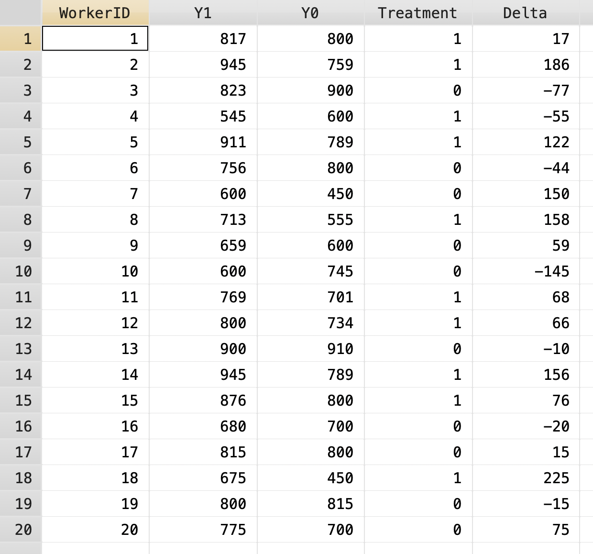
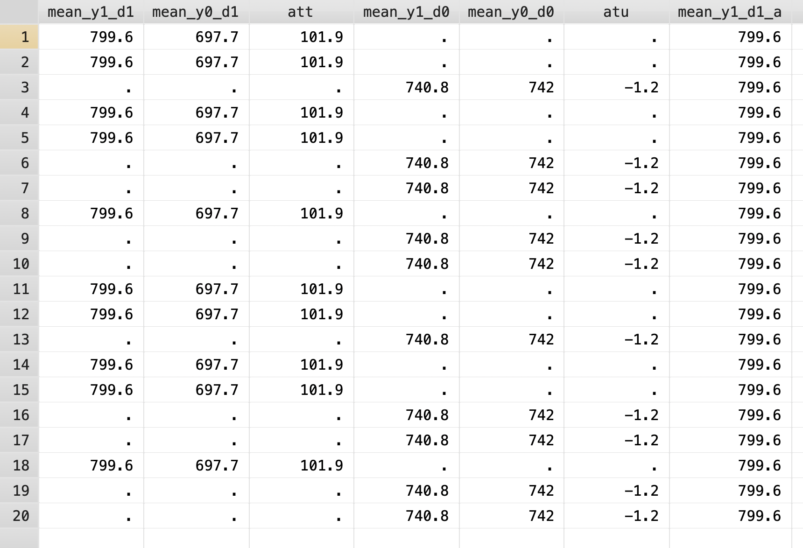
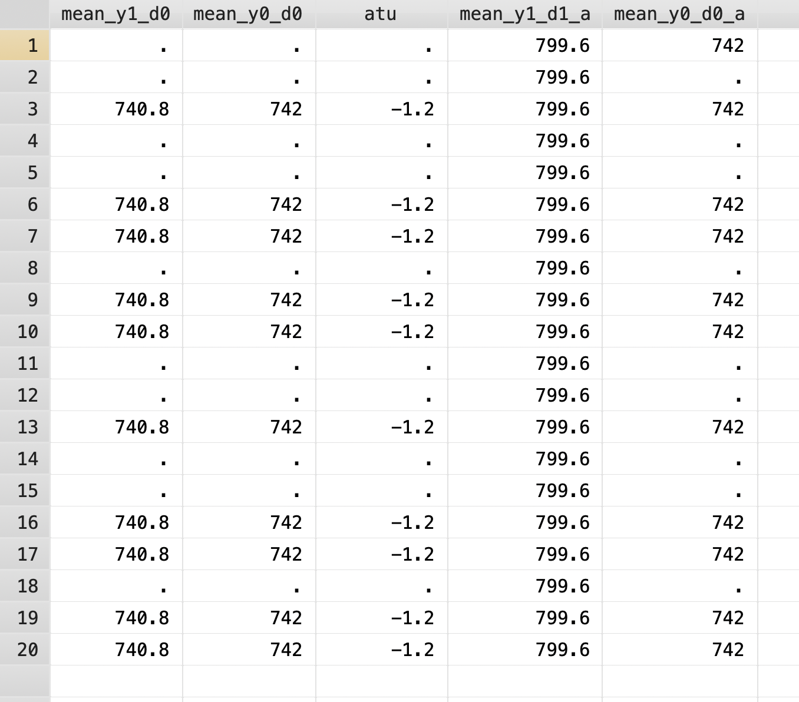

Chapter 1 Calculate Treatment Effects
We will use a hypothetical example to show average treatment effects \((ATE)\), average treatment effects on the treated \((ATET)\), and the average treatment effects on the untreated \((ATEU)\). We have potential outcomes of wages for workers for both \(Y^1\) and \(Y^0\). In real life we only realize one outcome, but we will do this for pedagogical purposes.

1.1 Calculate the ATE
First we will calculate the average treatment effects \((ATE)\). We can calculate individual treatment effects under this hypothetical example and find the average treatment effects. What we calculate is \(ATE=E[Y^1]-E[Y^0]\)
We will find the mean for \(Y^1\) and the mean for \(Y^0\), and then subtract \(\mu_1\) from \(\mu_0\).
egen mean_y1 = mean(Y1)
egen mean_y0 = mean(Y0)
gen ate = mean_y1 - mean_y0
list ate mean_y1 mean_y0 in 1/1 | ate mean_y1 mean_y0 |
|---------------------------|
1. | 50.35 770.2 719.85 |
+---------------------------+We estimate the average treatment effect to be 50.35.
1.2 Calculate the ATET
Next, we can calculate the average treatment effect on the treated \((ATET)\). We will subset only for those who actually received treatment. What we are calculating is \(ATET=E[Y^1|D=1]-E[Y^0|D=0]\).
egen mean_y1_d1 = mean(Y1) if Treatment == 1
egen mean_y0_d1 = mean(Y0) if Treatment == 1
gen att = mean_y1_d1 - mean_y0_d1
list att mean_y1_d1 mean_y0_d1 in 1/1(10 missing values generated)
(10 missing values generated)
(10 missing values generated)
+-----------------------------+
| att mea~1_d1 mea~0_d1 |
|-----------------------------|
1. | 101.9 799.6 697.7 |
+-----------------------------+Our \(ATET\) is 101.9.
1.3 Calculate the ATEU
Finally, we will estimate the average treatment effect on the untreated \((ATEU)\). We will subset for those who did not receive treatment. We are calculating \(ATEU=E[Y^1|D=0]-E[Y^0|D=0]\). In real life, we do not know \(E[Y^1|D=0]\)
egen mean_y1_d0 = mean(Y1) if Treatment == 0
egen mean_y0_d0 = mean(Y0) if Treatment == 0
gen atu = mean_y1_d0 - mean_y0_d0
list atu mean_y1_d0 mean_y0_d0 in 3(10 missing values generated)
(10 missing values generated)
(10 missing values generated)
+----------------------------+
| atu mea~1_d0 mea~0_d0 |
|----------------------------|
3. | -1.2 740.8 742 |
+----------------------------+1.4 Calculate the SDO
We need to compare \(E[Y^1|D=1]\) and \(E[Y^0|D=0]\) to calculate the simple difference in outcomes. Since we have already calculated \(E[Y^1|D=1]\) and \(E[Y^0|D=0]\), we will just fill in the blanks with some Stata data managment.
First, we will set up a duplicate column for \(E[Y^1|D=1]\). Since we have a value for \(E[Y^1|D=1]\), we can push the value forward with [_n-1] or the prior value of the observation.

Next, we will set up a duplicate column for \(E[Y^0|D=0]\). Since we do not have a value for \(E[Y^0|D=0]\) in the first observation, we will need to add another line of code. We have \(E[Y^0|D=0]\) in the last value, so we can use [_N] to get that observation and copy it to the first observation. Next, we will push the values forward similar to the prior example.
gen mean_y0_d0_a = mean_y0_d0
replace mean_y0_d0_a = mean_y0_d0_a[_N] if missing(mean_y0_d0_a[1])
replace mean_y0_d0_a = mean_y0_d0_a[_n-1] if missing(mean_y0_d0_a)
Finally, we can calculate the simple difference in outcomes \((SDO)\).
(20 missing values generated)
(20 real changes made)
+--------------+
| ate sdo |
|--------------|
1. | 50.35 57.6 |
+--------------+The \(SDO\) is upwards biased by 6.25 dollars in this hypothetical example. # Potential Outcomes